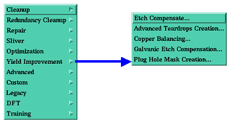

Two-sided relation
The Plug Hole Mask Creation is a read-write DFM
action intended to
create plug layers for defined drill layers. The DFM action enables you
to
define complex filters to specify which drill holes should be plugged,
and from
which side to plug a specific drill hole. Using this DFM action will
save time
and reduce errors when defining plug layers. This DFM action requires the license option viapdfm .
Select DFM >
Yield Improvement > Plug Hole Mask Creation

excludes text, arc, and surface features.
Whether slot and laservia features should have
plugs.
This is related to the screen parameter Plug
Hole if Mask
Clearance ... Smaller than Hole, Equal to Hole,
Larger than Hole. This
filter decides whether or not to plug a drill hole depending on the
relationship between the drill hole and a single (top or bottom) reference feature for that drill
hole.
1.
The
size of the annular ring (AR), for both the top and bottom
reference features, must be smaller than the maximum AR value as
defined by the
parameter pp_max_ar .
2.
Examine
the relationship between the size of the drill hole and
the mask clearance for either reference feature (top or bottom). See
examples
below that illustrate how these relationships appear in the Graphic
Editor.
3.
Based
on the criteria defined in the screen parameter Plug
Hole if Mask Clearance , decide
whether you need to
create a mask plug, or should consider other factors in making your
decision.
Related to the screen parameters One
Side is Partially Open, Both
Sides Fully Open, One Side Not Open and One side Open. This
filter
decides whether or not to plug a drill hole depending on the
relationship
between the drill hole and both (top and bottom) reference features.
If one side is partially open, and the other is
fully open, decide
whether
·
the
partially open side needs to be
plugged
·
the
fully open side needs to be plugged
·
both
sides need to be plugged
Open --the
feature from the reference layer fully covers the drill hole, or is the
same
size as the drill hole.
Partial --the
feature from the reference layer partially covers the drill hole, or is
smaller
than the drill hole.
Close --there
is no feature in the reference layer above the drill hole.
·
If
there is no reference feature on
either side of the drill hole (i.e. both sides are Closed)
,
then both sides must be plugged.
The pictures below illustrate these relationships
in the Graphic Editor.
Note> The definitions given above may seem
contrary to logic, i.e. that an open hole is one where "the reference layer fully
covers the drill
hole". But note that the reference layer is a negative layer in Genesis. This means that where
there is a feature in the layer mask, there is a clearance (an open
area) above
the drill on the physical board.
|
Two-sided relation |
|
A drill hole has two reference features. The top
reference feature
partially covers the drill hole; the bottom reference feature fully
covers the
drill hole (i.e. is open).
The following rules were created to decide whether
or not to plug the
hole:
·
For
holes with only one reference
feature, if the hole is open from that side (the reference feature is
larger
than the drill hole), there is no need to plug the hole.
·
For
holes with two reference features,
the drill hole must be plugged if one side is open and the other side
is
partially open.
In this situation, the rules conflict with each
other. To resolve such
cases, there is an order of precedence that specifies, for the various
items
that make up the relation between a drill hole and its reference
features, in
what situations you should or should not add a hole plug.
Highest priority> size of drill hole
In the example given above, the single-sided
relation has a higher
priority, in accordance with the rules of precedence defined above. In
this
example, the final result is that the top side is without a plug, and
the
bottom side has a plug.
If you have not defined both reference features,
the DFM action will not
process the mask clearance relation filter. If only one reference layer
is
defined, the relation of the drill hole to the undefined side is
defined by the
ERF variable v_no_mask_full_open . For a blind drill layer, if the blind
side completely masks the drill clearance, the single-sided relation is
defined
as closed (i.e. no clearance
above the drill hole).